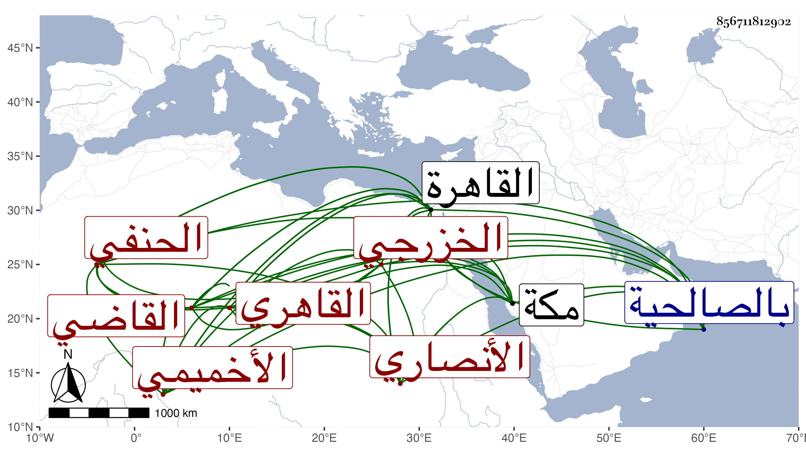

0902Sakhawi.DawLamic.ITO20230111-ara1.EIS1600.856711812902
Biography ID: 856711812902
106
محمد بن أحمد بن محمد بن أحمد بن محمد بن محمد بن عبد الوهاب بن البهاء القاضي ناصر الدين أبو الخير الأنصاري الخزرجي الأخميمي الأصل القاهري الحنفي ويعرف بابن الأخميمي . ولد في يوم السبت منتصف ربيع الأول سنة سبع وثلاثين وثمانمائة بالقاهرة وقال أن جدته لأمه شريفة حسنية وأملي علينا نسبها . نشأ فحفظ القرآن والعمدة والمجمع وألفية النحو والشاطبية وبعض الطيبة الجزرية ، وعرض على جماعة منهم العز بن الفرات وشيخنا بل قرأت بخطه أنه أجاز له في سنة تسع وأربعين بالمنكوتمرية والبرهان بن خضر والبدر العيني وأنه قرأ عليه في شرحه على المجمع وابن الديري والعز عبد السلام البغدادي في آخرين وأخذ في الفقه عن الشمس محمد بن عبد اللطيف المحلي وكان صديق أبيه وفي العربية وغيرها عن التقي الشمني ، وكذا قرأ في العربية كافية ابن الحاجب مع أصول الفقه على التقي الحصني واعتنى بالقراءات فأخذها في ابتدائه عن التاج السكندري ، وكذا أخذها عن الشهاب بن أسد جمع عليه سبعة الشاطبية مع ستة المصطلح لابن القاصح واليزيدي وإمان العطار في اختيارهما والزيون جعفر جمع عليه للأربعة عشر والهيثمي للعشر فقط وزكريا لها لكن لليسير ورام القراءة على إمام فما تهيأ . بل لما سافر لزيارة بيت المقدس أدرك الشمس بن عمران فقرأ عليه للأربعة عشر بمجمع السرور للقباقبي لكن لخمس البقرة فقط ثم للعشر فقط إلى خاتمة الزخرف ومات قبل اكماله ولم يقتصر على السبع بل تلا للعشر وللأربعة عشر فقط وللأربعة عشر فأزيد وتميز فيها اتقانا وأداء مع طراوة نغمة ومعرفة بالطرق ومشاركة في العربية والصرف بل سمعت من يثني على فضائله وذكائه . واستقر كأبيه أحد أئمة السلطان وباشرها بشهامة وعزة نفس ولم يتردد لأمير من الأمراء ونحوهم إلا يشبك الفقيه لخيره مع قلته بل لم يعلم تردده لكبير أحد من آحاد الشيوخ بل كان ابن أسد وجعفر ونحوهما يترددون إليه لقراءته عليهما وكان أولهم ينوه به ، وكذا ولي الخطابة بجامع الحاكم مع المباشرة به توقيتا وأوقافا ثم رغب عن مباشرة الأوقاف لأخيه وعن الخطابة لابن الشحنة الصغير لما استقر في الخطابة بالتربة الاينالية من واقفها ومشيخة الخانقاة المنجكية ثم التصدير بالباسطية ومشيخة البرقوقية كلاهما عن الشمس الأمشاطي لكونه كان حين استقراره في المشيخة بعد موت العضد الصيرامي لم يزعج أبنته وأمهما وعيالهما عن السكنى بها على عادتهم قبل موته واتفق تزوج صاحب الترجمة بها فكان ذلك حجته في السعي فيها حتى استقر هذا مع اجتهاد المحب بن الشحنة فيها بعد العضدي متمسكا بأن ابنه الصغير كان زوجا لأبنة العضدي وله منها ولد حين موته مع انفصاله عن أمها فلم يسعد بذلك والأعمال بالنيات ، وكان في أبعاد أبنة العضدي عنهم أولا ثم عدم وصولهم للوظيفة وتيسرهما لصاحب الترجمة الذي لم يزن بريبة كرامة لأبيها ، وكذا استقر صاحب الترجمة في النظر على الجاولية بالكبش حين علم السلطان تقصير ناظرها ومباشريها وأهانهم مرة بعد أخرى فباشرها واسترجع بعض أوقافها وعمر فيها ، وكذا حسنت مباشرته للبرقوقية وصمم في أمورها جدا وسوى بين المستحقين وألزمهم الحضور ولم يلتفت لرسالة وغيرها بحيث سمعت من يتظلم منه تجاه وجه النبي صلى الله عليه وسلم واستوحش منه أمير آخور وغيره وكاد أمره أن ينخرم فيها ثم تراجع عينه السلطان لعمل حساب الشمس محمد بن عمر الغزي بن المغربي الآتي ، ثم ولاه عوضه قضاء الحنفية في يوم السبت منتصف شوال سنة إحدى وتسعين يعد شغوره أزيد من شهر ونزل في ركبة حافلة إلى الصالحية على العادة ولكنه لم يسمع دعوى ثم توجه والقضاة الثلاثة ومن شاء الله معه لسكنه عند بيت البشيري من البركة ولم يركب لأحد ممن ركب معه بل ولا استناب في أول يوم أحدا ثم في ثاني يوم فوض الشنشي والصوفي والصدر الرومي والتقي بن القزازي ونقبه هو والبدر السعودي ثم بعد بيوم استناب البدر بن فيشا وحضه على التجمل في ملبسه ومركبه ثم الشهاب بن إسماعيل الجوهري وخصه بالصالحية والشهاب القليجي ، ولم يلبث أن عزل نفسه حين أدرجه فيمن قيد عليه ولكنه أعيد عن قرب ثم ابن اسماعيل الصائغ وغيره ، وجدد بعض النواب . والتزم ترك معلوم الأنظار في شهر ولايته بل والذي يليه وصرف متحصلهما مع الشهر قبلهما في العمارة وتوسع في الاستبدالات حيث لم يمكنه الترك . وقد أخذ عنه غير واحد القراءات بالقاهرة ومكة حين مجاورته بها وكذا أقرأ غيرها كالعربية والصرف وسمعت أن الشهاب السعودي الصحراوي أحد المتقدمين فيها كان يتردد إليه أما لقراءة صاحب الترجمة أو لسماع قراءة أخيه وكذا لازمه الزين بن رزين وقبله أحيانا العز الوفائي وكلاهما من علماء التوقيت فكأنه كان يأخذه عنهما لما أخبرت من براعته فيه بحيث صارت له ملكة في استخراج أعمال السبعة السيارة من مقوماتها وخطب مخطوبا بعدة أماكن تبرعا وكذا أم في التراويح بجامع الحاكم وغيره ليالي وتزاحم الناس لسماعه والصلاة خلفه وهذا هو الذي طار أسمه به مع مزيد صفائه وتفننه وبديع إدائه وله في مجلس الملك حركات فيها بركات وكلمات مفيدة في المهمات ، ولازال يذكرني بالجميل ويتحفني بالمجاورة بالفضل الجزيل جمل الله بوجود وحمل ذاته على نجائب كرمه وجوده .
